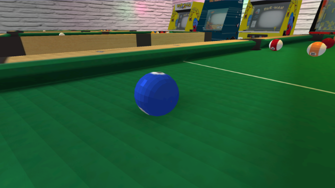
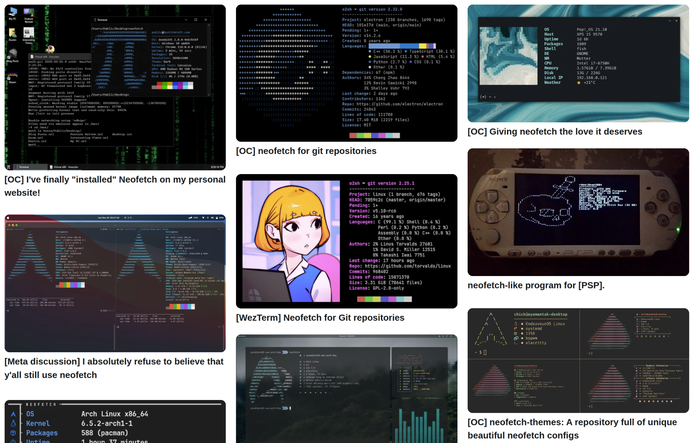

Introduction
 When I first started writing this project, I had no intention of creating something commercially appealing. I was interested in something completely different: I wanted to understand how graphics work from the inside. How it all began and where it came from. In my second year, I chose the course Principles of Computer Graphics and Image Processing, where we theoretically studied the main principles and approaches in rendering during lectures, but in practice, we worked with OpenGL. After completing the course, I wanted to go deeper and understand how everything works at a lower level.
 The next step was the book Computer Graphics and the C Language by Branislav Sobota. I first came across it in the library at our Nokia office and immediately knew I wanted to study it. I ordered my own copy, both to add it to my professional library and to read it at my own pace. The book is quite old, published back in 1996, and in many ways outdated, since the author uses the Borland C++ graphics library aimed at DOS graphics, without GPU or shader support. But even so, it turned out to be interesting and useful material. After that amount of theory, I wanted to move on to practice, and that's how the idea of doing everything from scratch came about.
The next step was the book Computer Graphics and the C Language by Branislav Sobota. I first came across it in the library at our Nokia office and immediately knew I wanted to study it. I ordered my own copy, both to add it to my professional library and to read it at my own pace. The book is quite old, published back in 1996, and in many ways outdated, since the author uses the Borland C++ graphics library aimed at DOS graphics, without GPU or shader support. But even so, it turned out to be interesting and useful material. After that amount of theory, I wanted to move on to practice, and that's how the idea of doing everything from scratch came about.

I have always been attracted to the idea of programs that work with minimal resources. Minimalism not in the sense of primitiveness, but as a discipline: what can you build with just the basic tools and some math - like the early pioneers did. That's how objcurses came about - an ASCII renderer for 3D models that uses a terminal instead of a screen as the output target. At the start of the project, it seemed almost impossible.

I chose to render using ASCII characters in the terminal because I'm a big fan of this retro approach. In the past, CLI programs often used text-based art, because the screen was limited to symbols, but people still wanted to create visually attractive graphical interfaces. And even now, this approach has many followers. Take neofetch, for example - a simple utility for displaying system information, but the main focus is often not on the information itself, but on the ASCII art. This is a place where users can express themselves. I remember my friend spending an entire day tweaking the config just to get a Vault Boy art from Fallout to show up correctly. This is not just a technical detail, it's a form of personalization. And I really like that something like this can be part of even a simple terminal application.
So, in this article, I want to talk about how the graphics pipeline of my project works from the inside: how vertices and faces are stored, how polygons are processed, how projection is built, and how all of this is turned into a final image.